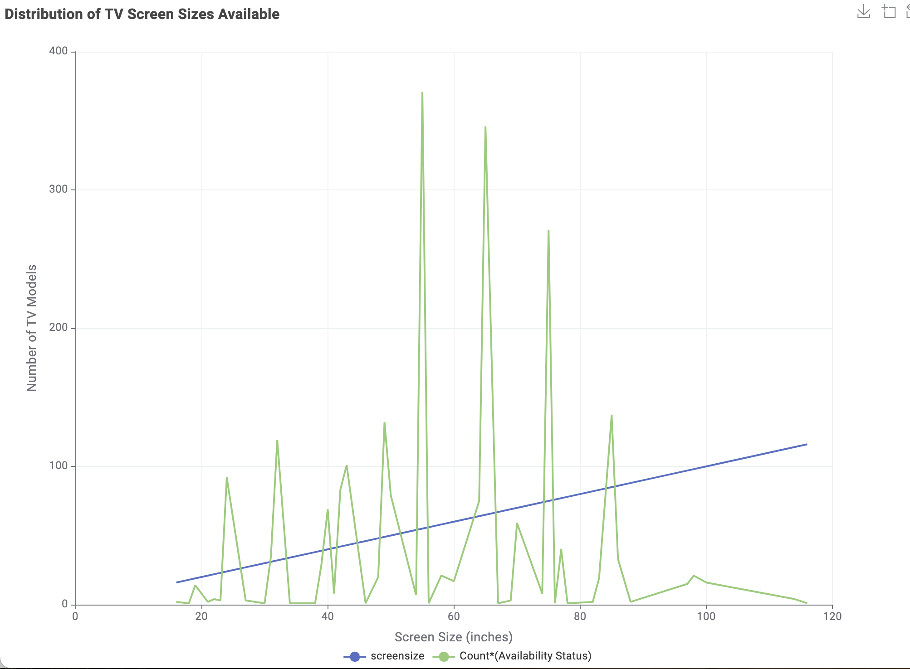
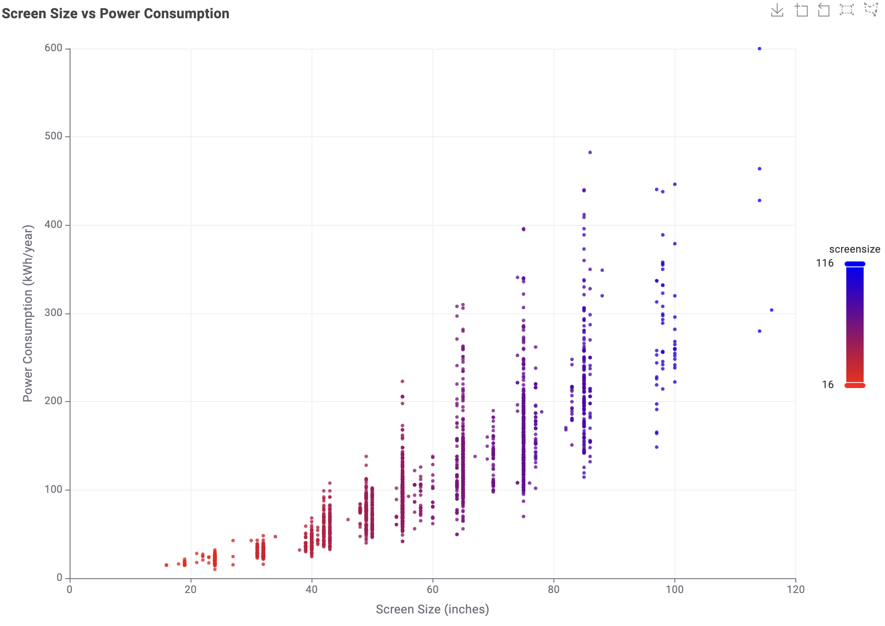
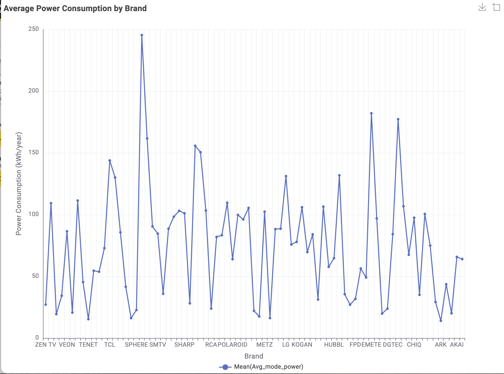

TV Energy Consumption in Australia
This page presents an analysis of television energy consumption data published by the Australian Government. The visualisations aim to help consumers understand how screen size, display technology, brand, and energy efficiency relate to power usage, supporting informed purchasing decisions.
1. Screen Technologies Available in Australia
Consumers often face confusion when choosing between different TV screen technologies. This data view helps clarify which technologies are most widely available in Australia.

2. Screen Size Distribution
Choosing the right TV size can affect both viewing experience and energy consumption. This overview helps consumers understand which screen sizes are most common.
3. Number of Models by Brand
Some brands offer more choices than others. This section helps users compare how many TV models each brand provides.

4. Power Consumption by Screen Technology
Different TV technologies can lead to different electricity costs. This view helps households understand which technologies use more power.

5. Relationship Between Screen Size and Power Consumption
As TV size increases, electricity usage often increases as well. This section helps users understand the relationship between size and power use.
6. Star Rating and Screen Size
Energy ratings play an important role in reducing household electricity bills. This view helps show how efficiency ratings relate to TV size.

7. Power Consumption Differences Between Brands
TVs from different brands can vary in energy efficiency. This section supports households in comparing average power usage by brand.
